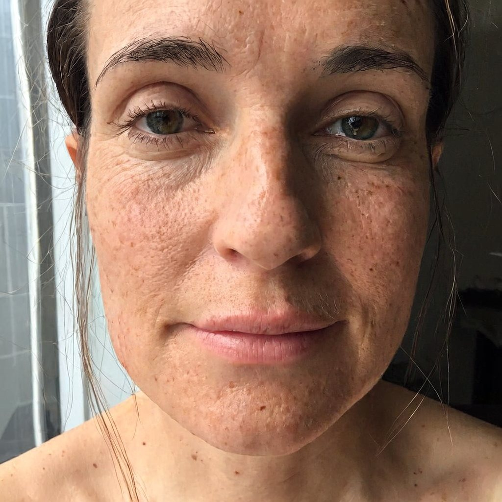

静止画を見比べる
同じプロンプトとシードでつくった画像を、左右に並べて見比べられます。前半は画像モデルの違い、後半は高解像度化の方法の違いです。使い方は静止画をつくる・編集するにあります。
このページの画像は、すべてAIで生成したものです（H3cAppの画像生成の処理で、P-H3-ImageとMiniMax H3 Imageを使用。Powered by MiniMax H3）。表示用にJPEGにしています。
画像モデルを見比べる
同じプロンプトとシードで、3つの形の画像モデルに1024×1024の画像をつくらせました。題材と左右のモデルを選んでください。


| モデル | ステップ数 | 1024×1024の時間 | 向いているもの |
|---|---|---|---|
| P-H3-Image | 8 | 約35秒 | 整った写真、細かい描き込み、特大（約8メガピクセル） |
| MiniMax H3 Image | 6 | 約32秒 | 飾らない写真らしさ、多くの参照を使う編集 |
| P-H3-Image（動画モデルとLoRA） | 8 | 約1分10秒 | ダウンロードを約10GBに抑えたいとき（仕上がりはP-H3-Imageに近く、時間は約2倍） |
P-H3-Imageの2つの形は、同じシードでも少し違う画像になります。重みの持ち方が違う（専用の重みか、動画モデルの重みにLoRAを当てるか）ためで、どちらかが正しいというものではありません。
高解像度化を見比べる
上のP-H3-Imageの4枚（1024×1024）を、方法ごとに2倍（2048×2048）にしました。比べているのは、元の画像の320×320にあたる部分を、縮小せずに切り出した640×640です。比べている画像の下にある小さな画像の赤い枠が、切り出した場所です。
高解像度化は、v0.10.0からの機能です。プレビューの「高解像度化…」か、「プロジェクトの動画と画像…」の「その他」から使います。大きくした画像は、元の画像を残したまま新しい画像としてプロジェクトに加わります。


| 方法 | 1024×1024から2倍の時間 | 大きさの上限 | 仕上がり |
|---|---|---|---|
| 標準 | 約1秒 | 一辺4096ピクセル | 見た目はそのまま、少しぼやける |
| MetalFX | 約1秒 | 一辺4096ピクセル | 標準とほぼ同じ |
| Real-ESRGAN 汎用 | 約2秒 | 一辺4096ピクセル | くっきりするが、肌や毛がなめらかになり、細かな模様が崩れる |
| Real-ESRGAN アニメ | 約2秒 | 一辺4096ピクセル | イラストの線と塗りがくっきり。写真は塗り絵のようになる |
| SwiftVR | 約20秒 | 一辺4096ピクセル | なめらか。静止画では細部が増えにくい |
| SwiftVR 4倍で生成してから縮小 | 約43秒 | 一辺4096ピクセル | 元の画像に忠実で、標準に近い |
| 画像モデルで描き直す | 約1分20〜30秒 | 約8メガピクセル（2912×2912など） | 細部をいちばん描き足す。強いほど元の画像から離れる |
描き直しは、大きくするほど効果がはっきり出ます。P-H3-Imageは約8メガピクセルで最も良くなるモデルなので、1024×1024から2912×2912に描き直すと、肌のしわやしみまで描き込まれます（M5・24GBで約2分40秒）。
高解像度化の方法の選び方
やりたいことから選びます。上の行ほど早く終わります。
| やりたいこと | 選ぶ方法 |
|---|---|
| 見た目を変えずに、すぐ大きくしたい | 標準 |
| イラストやアニメの線と色を、絵を変えずにくっきりさせたい | Real-ESRGAN アニメ |
| 写真を、元の画像に忠実なまま少しくっきりさせたい | SwiftVR 4倍で生成してから縮小 |
| 写真の細部（肌、髪、毛並み、文字の筆跡）を描き足したい | 画像モデルで描き直す・標準 |
| 細部は欲しいが、顔立ちや模様はできるだけ変えたくない | 画像モデルで描き直す・控えめ |
| 細部を描き足しながら、できるだけ大きくしたい | 画像モデルで描き直す（約8メガピクセルまで） |
- 描き直しは「生成」です。元の画像のプロンプトとシードを使い、画像モデルが細部を新しく描きます。顔や文字、模様が少し変わることがあるので、仕上がりを確かめてから使ってください。取り込んだ画像には元のプロンプトがないので、パネルの画像のプロンプトに内容を書いてから描き直します。
- Real-ESRGANは写真の文字や毛並みに注意。くっきりしますが、チョークの粒や毛並みのような細かい模様は、元にない形に固まりがちです。
- 迷ったら2つ試す。どの方法も元の画像を残したまま新しい画像をつくるので、標準と描き直しの両方をつくって見比べられます。
この比較のつくり方
- 画像：4つの題材を、P-H3-Image（専用の重み）、MiniMax H3 Image、P-H3-Image（動画モデルのDiTとLoRA）で、1024×1024・同じシード（題材ごとに11〜14）でつくりました。プロンプトは下のとおりです。
- 高解像度化：P-H3-Imageの4枚を、どの方法でも2倍（2048×2048）にしました。描き直しはP-H3-Image（専用の重み）で、元の画像と同じプロンプトとシードを使っています。比べている部分は、元の画像の320×320にあたる640×640を、縮小せずに切り出したものです。
- 環境：M5・メモリ24GBのMac。開発中に、v0.10.0と同じ処理で、画像と描き直しはコマンドラインから、ほかの拡大はアプリのAPIから実行しました。どれも1回ずつで、選び直しはしていません。
- 同じプロンプトとシードでも、Macの機種や設定によって結果は変わることがあります。ページ用にJPEGにしているので、細かな粒状感は実際のPNGより少し減っています。
プロンプト
- 人物写真（シード11）：
Close-up portrait photograph of a woman in her thirties with freckles, face and shoulders filling the frame, natural skin texture with visible pores, fine lines near the eyes, a few stray hairs, no makeup, soft window light from the left, 85mm lens, sharp focus, natural colors, no retouching. - 文字のある写真（シード12）：
A photograph of a chalkboard sign standing outside a small bakery in the morning, hand-lettered in white chalk with the words "FRESH BREAD" and below it "OPEN 7AM", a wicker basket of baguettes beside it on the cobblestones. - アニメ調のイラスト（シード13）：
An anime-style illustration of a girl with short black hair in a yellow raincoat holding a red umbrella on a rainy city street at night, neon signs reflected in the puddles, clean line art, vivid colors. - 質感（シード14）：
A photograph of a tabby cat curled up asleep on a chunky cream knitted blanket, soft afternoon window light, every strand of fur and every loop of wool sharply visible.